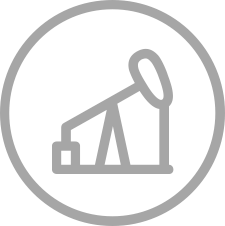
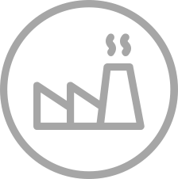
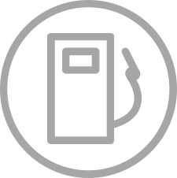
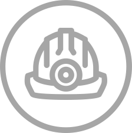

Energy and Resources Analytics Portal
Energy and Resources Analytics Portal
Energy and Resources Analytics Portal
Energy and Resources Analytics Portal

Upstream
The acquisition, exploration and development of properties for the production of crude oil and natural gas from underground reservoirs. These companies operate both onshore and offshore and many explore and develop reserves in remote locations. The upstream oil sector is also known as the exploration and production (E&P) sector.
Oilfield Services
Services and products predominantly serving the upstream sub-sector. Oilfield service companies provide the tools and services required to expedite the drilling of the well. These companies supply manufactured products, technology and services for hydrocarbon fromation, evaluation, drilling and completion & production of oil and natural gas.Oilfield service companies manufacture equipment or build it on site, maintain it once in operation and provide related products and services including geological evaluations. Their customers may include oil and gas producers, as well as drilling companies. Service providers encompass the group of companies that provide ancillary services (often of a highly technical nature) to the actual drilling services.

Midstream
The transportation, storage and trading of crude oil, refined products and natural gas. It includes the gathering, processing and transmission of natural gas, the transportation fractionation and storage of natural gas liquids (NGLs) and/or the gathering and transportation of crude oil. The companies are actively involved in the wholesale marketing and trading of these hydrocarbon products.

Downstream
Includes both Downstream Oil & Gas activities as well as Biofuels. In terms of Oil & Gas, it relates to petroleum activities from the processing of refining crude oil into petroleum products then to the distribution, marketing, and shipping of the production. It consists of the refining of purchased and/or extracted crude oil into various hydrocarbon products including gasoline, jet fuel, and diesel. The companies market and trade these products through wholesale and retail channels. In terms of biofuels, it encompasses fuels such as methane produced from renewable biological resources such as plant biomass and treated municipal and industrial waste.

Mining
Mining is the process or business of extraction of valuable minerals or other geological materials from the earth from an orebody. Mining techniques can be divided into two common excavation types: surface mining and sub-surface (underground) mining. Today, surface mining is much more common, and produces, for example, 85% of minerals (excluding petroleum and natural gas) in the United States, including 98% of metallic ores. Once the mineral is extracted, it is often then processed.
Power & Utilities
Power & Utilities